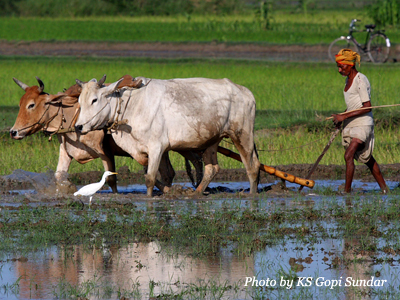
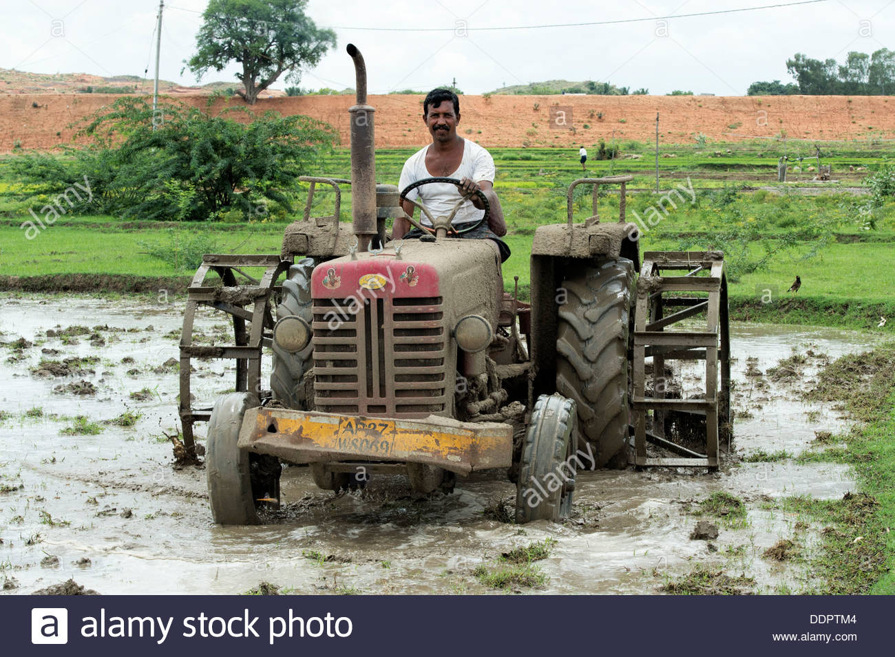
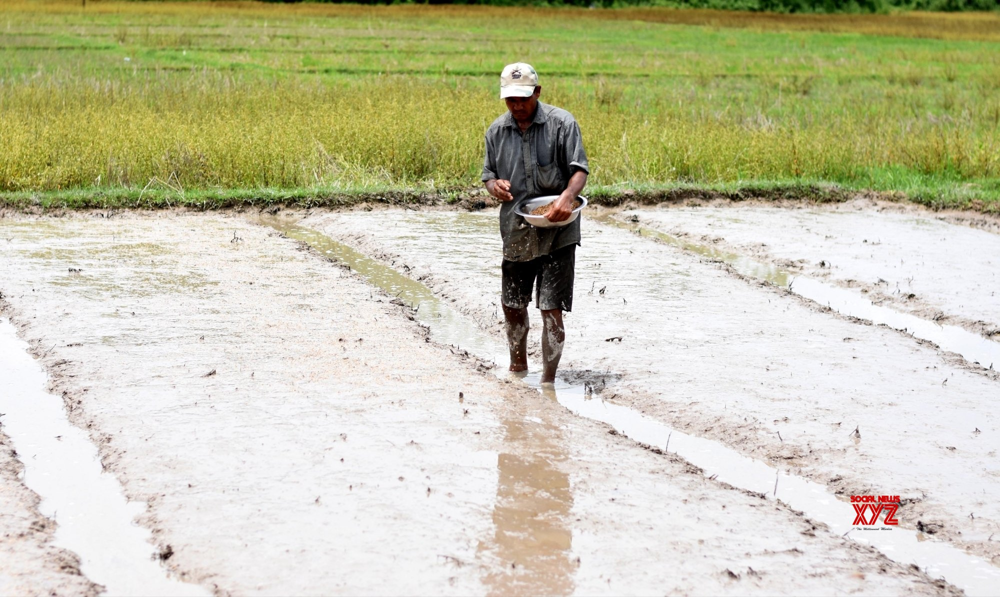

Proper seed selection based on the cultivation environment is the first step towards ensuring that
the highest possible yield is achieved.
1.Improve yield by 5 – 20%
2.Improve germination by more than 80%
3.Increase resistance to disease and pest attacksbr
4.Maintain uniformity in plant size
5. Have fewer weed problems
step2:Land preparation:



1.The main purpose of land preparation is to have the soil in optimum physical condition for growing rice.
Plowing and tilling of land is done to predetermined levels that allow rice plants to develop a good root system.
2.The proper preparation of land for sowing is achieved via tractors (mechanical means) or with the help of water buffaloes.
Land preparation also includes land leveling to ensure water reaches all areas planted.